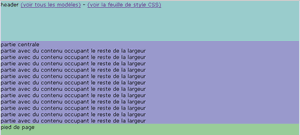
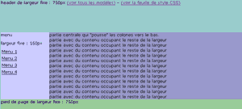
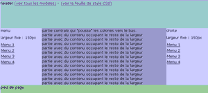
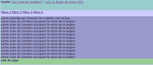
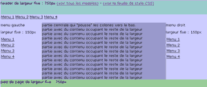
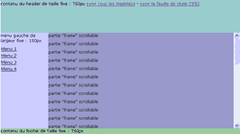

Modèles basés sur le positionnement absolu : Adaptés à la plupart des cas. Inadaptés pour des colonnes de hauteurs égales.
- 1- Largeur fixe centré (750px), header / contenu / footer 
- 2- Largeur fluide (%), header / contenu / footer
- 3- Largeur fixe (750px), header / menu gauche / contenu / footer 
- 4- Largeur fluide (%), header / menu gauche / contenu / footer
- 5- Largeur fixe (750px), header / menu gauche / menu droit / contenu / footer 
- 6- Largeur fluide (%), header / menu gauche / menu droit / contenu / footer
- 7- Largeur fixe (750px), header / menu haut / contenu / footer 
- 8- Largeur fluide (%), header / menu haut / contenu / footer
- 9- Largeur fixe (750px), header / menu haut / menu gauche / menu droite / contenu / footer 
- 10- Largeur fluide (%), header / menu haut / menu gauche / menu droite / contenu / footer
- 11- Largeur fixe (750px), header / menu gauche / contenu scrollable / footer 
- 12- Largeur fluide et hauteur fluide (%), header / menu gauche / contenu scrollable / footer